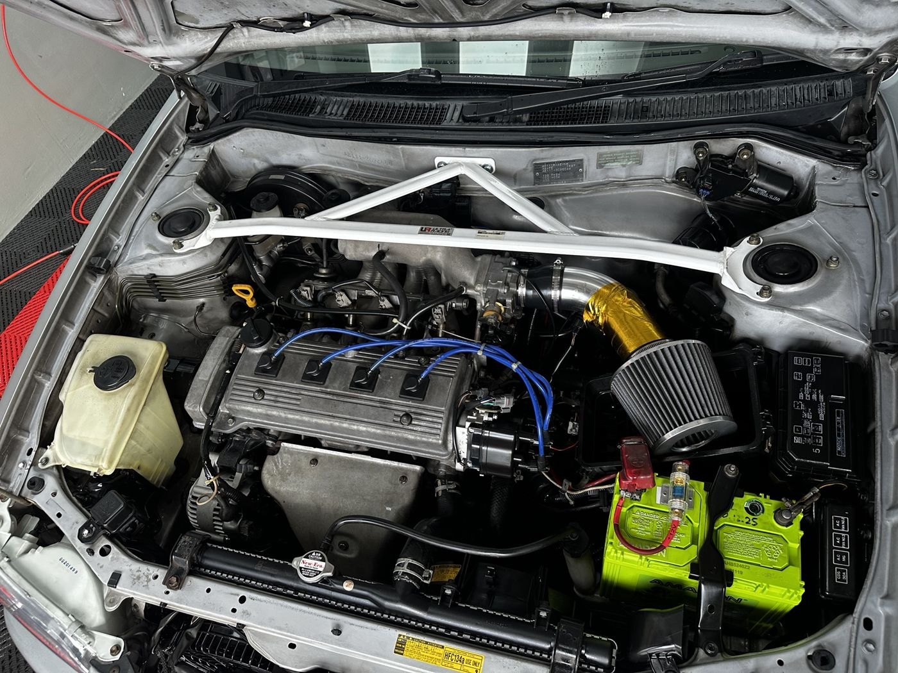
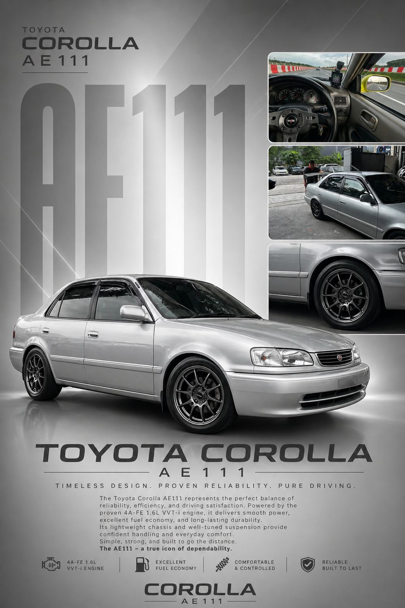

An old car is a good teacher. Every fault has a cause you can trace, and every fix has a cost you can weigh against how long the car has left. Working on it taught me to diagnose before replacing, and to keep a record of what I change.
Under the bonnet

Strut bar, cone filter intake and blue ignition leads
Engine and reliability
Timing chain, water pump and head gasket replaced
Oil pan and valve cover gaskets fixed, which ended the oil leak
New radiator and fan motor, after tracing a cooling problem with the air conditioning
New distributor and alternator, iridium spark plugs
Chassis and brakes
Front and rear strut bars, sport springs and new front lower control arms
Project Mu HC+ front pads, with new rear drums and shoes
New rims on Continental UC7 tyres
Cabin
Nardi steering wheel, short shifter and new gear knob
Two-way component speakers and a subwoofer in the spare wheel well
A poster I made of it

Next
I am designing a small dashboard screen that sits in front of the original cluster and shows speed, fuel and range left, running on an ESP32 with the electronics in a 3D-printed box behind the dashboard.